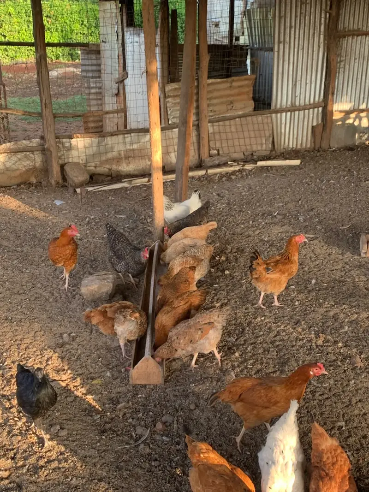
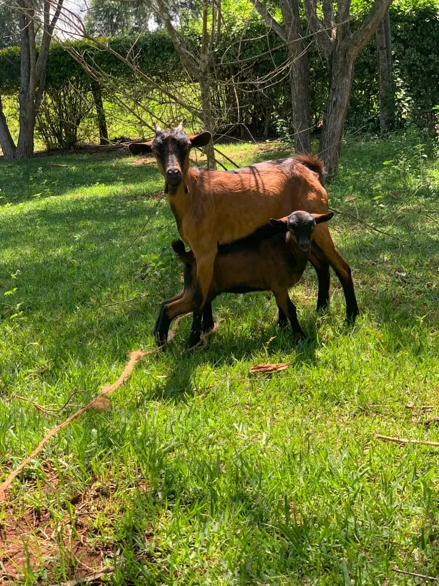
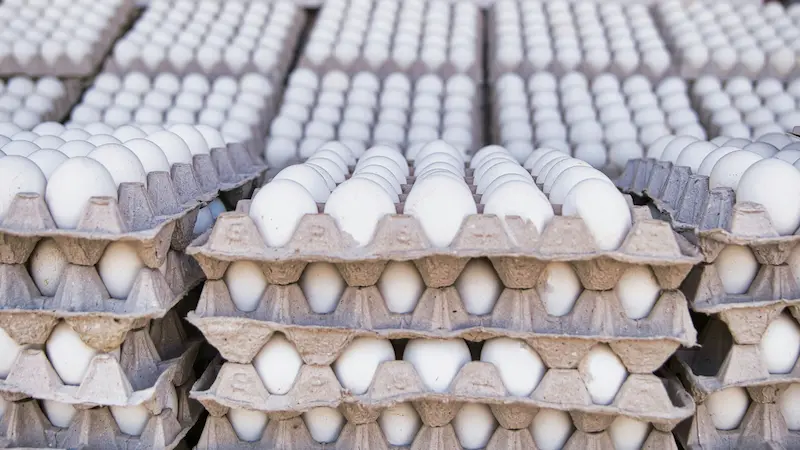

Mother & Sons



Fresh from our farm to your table. Kienyeji chicken, eggs, pigs, goats, sheep, milk, rabbits and geese.
See what we haveOur Products
About the Farm
Mother & Sons Farm is a family-run farm in Kitale, Trans Nzoia County. We raise kienyeji chickens, layers, pigs, goats, sheep, cows, rabbits and geese, and grow fresh vegetables.
The farm was founded by Doreen, the Mom in Mother & Sons”, who started it out of a love for farming and a desire to build something meaningful for her family while providing useful farm products to the local community.
At Mother & Sons, we care about raising healthy animals, growing good-quality produce, and treating our customers with honesty and respect. As a family farm, we take pride in our work and aim to provide products our community can enjoy and rely on.
Everything we sell comes straight from our farm, so you know exactly where your food comes from. Availability changes with the season, so contact us to ask what is currently available or to place an order.
- 🐓 Free-range kienyeji chicken and eggs
- 🥬 Fresh vegetables picked to order
- 🐐 Livestock for meat, breeding and events
- 🚚 Delivery within Kitale and pickup at the farm
Delivery & Pickup
We deliver within Kitale town and its surroundings. Pickup is available at the farm. Delivery fees depend on distance, so message us for a quote.